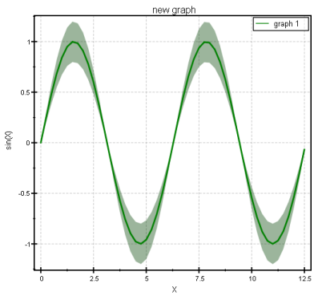

$$qf_commondoc_header.start$$ $$qf_commondoc_header.end$$
Introduction
The table column expressions are a powerful tool to perform calulations in a table. First of all the expression use the built-in expression parser, which has been extended with special functions to access the table contents and for column statistics.
You can reach this functionality by double-clicking any column header and then activating the "expression" checkbox in the table column editor dialog.
Tutorial
- Start a new QuickFit project and add an editable table (Data Items | Insert Raw Data | Table | Editable Table) and open the table editor (double-click table in project
- Go to the "Data Table" tab. It will now display an empkty table.
- For this tutorial we will create some column expression and use them to perform diverse calculations. First we create a few columns, that contain sine and cosine functions, evaluated at equidistant points
- double-click the first column and set the title to "X", activate the expression-checkbox and set the expression to $$codeexample:0:0.25:(4*pi)$$This will generate column of values between 0 and $$math:2\pi$$, with a distance of 0.25.
- Now double-click the second column-feader, set the title to "sin(x)" and the expüression to $$codeexample:sin(column(1))$$This will calcuate the sine of the data in the first column. The function column(1) simply returns the vector of all numbers in the first column.$$note:You can always right-click the expression editor widget to open a context-menu, in which you can also insert a column(...) reference to one of the columns in the table (towards the end of the menu).$$
- Double-click the third column and set the title to "error". Set the expression to $$codeexample:0.2*abs(column(col-1))$$This will calculate the absolute value of the previous column (col contains the number of the current column!) and multiply it by 0.2.
Now we are going to create a plot of the data in the table, to get a better idea of what we did:
- Change into the plot tab and add a new plot using

- Add a graph to the plot using in the graph tab.
- Select column X as x data col, column sin(x) as y data col. and column error as Y error col.
- Set the symbol to none and select error polygons as error style. Set their transparency to 150.
- Finally change to the "Coordinate System" tab and there to "Axes". Click on "Autoscale XY".
- Now you should have a plot like this:
